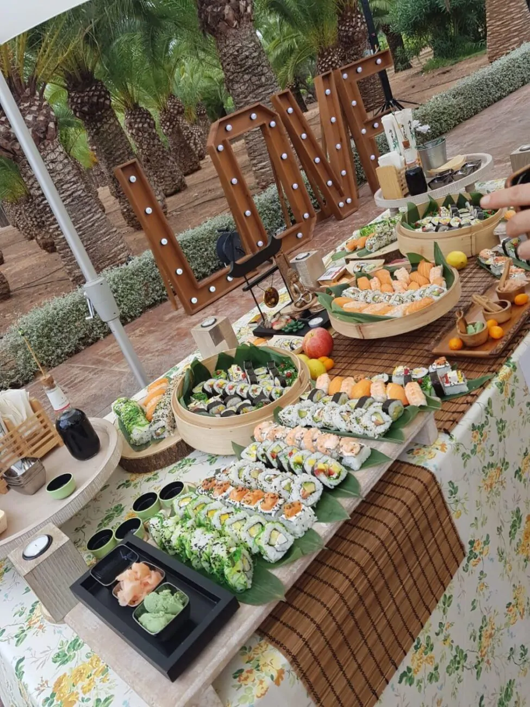
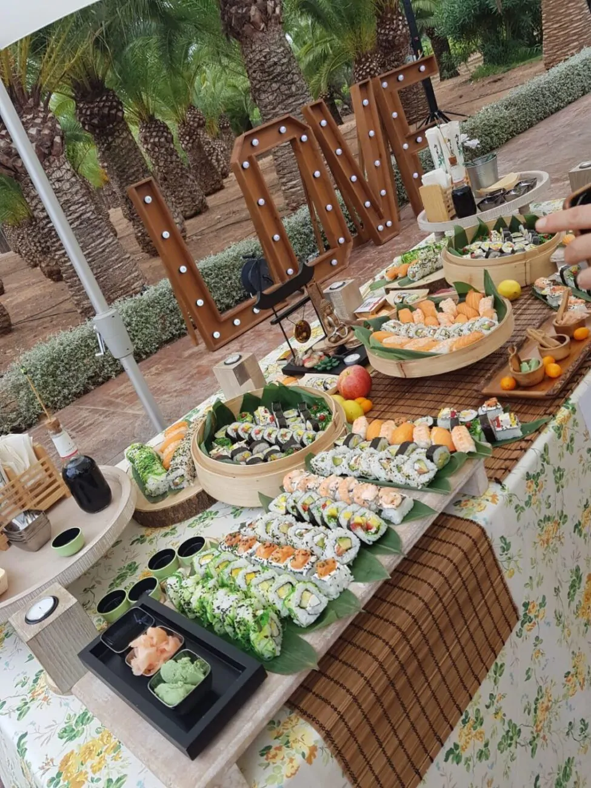

Pensamos el catering como un momento especial. Una combinación entre la más
alta cocina y un ambiente cálido, donde la vanguardia es el componente
principal. Desde hace más de 10 años nos dedicamos a hacer lo que más nos
apasiona: la cocina japonesa. Por eso nos renovanos permanentemente en busca
de mejores propuestas.
 
